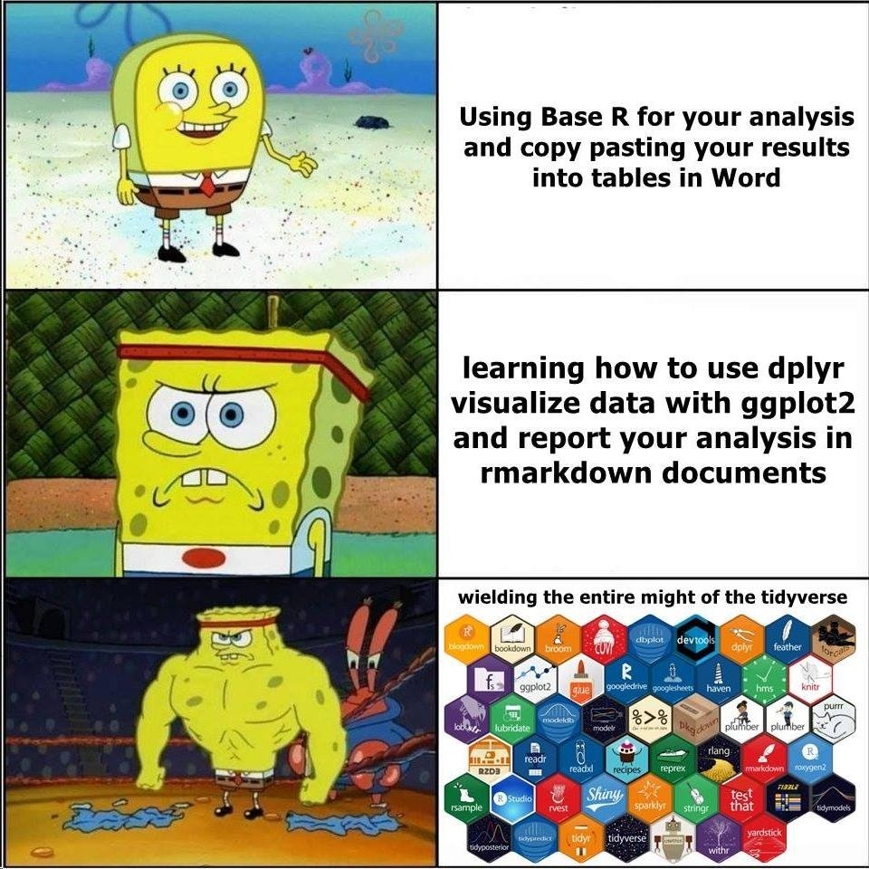

Chapitre 1 Introduction
1.1 Pourquoi ce Manuel ?
Dans un environnement où les projets d’analyse de données et de modélisation se multiplient, il devient crucial d’établir des pratiques de codage cohérentes. Ce manuel a été conçu pour vous proposer des lignes directrices qui visent à uniformiser la manière dont nous écrivons du code en R au sein de notre organisation. L’objectif est simple : faciliter la collaboration, améliorer la lisibilité du code et renforcer sa maintenabilité.
Adopter des conventions communes en matière de syntaxe permet de réduire les erreurs, d’accélérer le processus de relecture par les pairs, et de rendre le code plus accessible, même pour ceux qui ne l’ont pas écrit. En d’autres termes, cela rend notre travail plus efficace et plus agréable.
Pourquoi est-ce nécessaire ?
Collaboration améliorée : Lorsque tout le monde suit des conventions similaires, il est plus facile de comprendre et de contribuer au code des autres.
Réduction des erreurs : Des pratiques cohérentes réduisent les risques d’erreurs accidentelles et facilitent leur détection.
Reproductibilité : Un code propre et bien documenté est plus facile à reproduire, ce qui est essentiel pour des projets scientifiques ou industriels.
Formation et Intégration : Les nouveaux membres de l’équipe peuvent se familiariser plus rapidement avec le code existant si celui-ci suit des conventions claires et universelles.
1.2 Qu’est-ce que le Tidyverse ?
Le tidyverse est un ensemble de packages en R qui partagent une philosophie commune de conception axée sur la lisibilité, la cohérence et l’efficacité. Ces packages sont conçus pour transformer les tâches de manipulation des données, de visualisation et d’analyse en processus simples et intuitifs, tout en étant puissants et flexibles.
Les principes fondamentaux du tidyverse :
Données tidy : Une structure où chaque variable est une colonne, chaque observation est une ligne, et chaque type d’observation forme une table distincte. Cette structure simplifie considérablement la manipulation des données.
Syntaxe cohérente : Les fonctions des packages du tidyverse suivent une syntaxe uniforme, ce qui facilite l’apprentissage et l’utilisation de nouveaux outils.
Interopérabilité : Les packages du tidyverse sont conçus pour fonctionner ensemble de manière fluide, ce qui permet de créer des flux de travail efficaces du début à la fin.
Pourquoi adopter le tidyverse ?
Lisibilité : Le code écrit en utilisant les packages du tidyverse est généralement plus lisible et plus facile à comprendre.
Productivité : Les pipelines et les fonctions du tidyverse permettent d’écrire moins de code pour accomplir plus de choses, ce qui augmente la productivité.
Écosystème riche : Le tidyverse s’intègre à un écosystème plus large de packages R, ce qui vous permet de réaliser des analyses complexes avec des outils familiers.
1.3 Les Packages du Tidyverse
Voici une liste non exhaustive des principaux packages qui utilisent la syntaxe du tidyverse :
ggplot2: Pour créer des visualisations élégantes basées sur la grammaire des graphiques.dplyr: Pour la manipulation des données (filtrage, sélection, réordonnancement, regroupement, etc.).tidyr: Pour transformer les données, par exemple en passant d’un format large à un format long.readr: Pour lire des fichiers de données de manière rapide et cohérente.tibble: Pour travailler avec des data frames améliorés qui sont plus intuitifs et cohérents que les data frames de base.gt: Pour créer des tableaux élégants et personnalisables.purrr: Pour l’application de fonctions de manière élégante sur des listes et d’autres structures itérables.stringr: Pour la manipulation de chaînes de caractères avec des fonctions claires et cohérentes.forcats: Pour la gestion et la manipulation des variables de type facteur.
Ces packages représentent le cœur du tidyverse, mais il en existe bien d’autres qui s’appuient sur la même syntaxe et philosophie, tels que lubridate pour la manipulation des dates, broom pour transformer les modèles statistiques en data frames, et janitor pour le nettoyage des données.

1.4 Pas encore convaincu ? Quelles sont les alternatives ?
Si vous n’êtes pas encore convaincu que le tidyverse est l’approche la plus adaptée, il existe plusieurs alternatives populaires pour manipuler, analyser et visualiser des données en R. Cependant, chacune a ses propres avantages et inconvénients :
1.4.1 1. Base R
Description : Les fonctions de base R permettent de manipuler les données sans avoir besoin de packages supplémentaires.
Avantages : Pas de dépendances externes, très flexible pour des tâches spécifiques, performant pour certaines opérations.
Inconvénients : Syntaxe moins intuitive, moins de cohérence, plus difficile à maintenir pour les projets complexes.
1.4.2 2. data.table
Description :
data.tableest une extension rapide et efficace des data frames, idéale pour les grandes tables de données.Avantages : Très performant, syntaxe concise, utilisation efficace de la mémoire.
Inconvénients : Syntaxe différente et parfois moins intuitive, courbe d’apprentissage plus élevée, intégration moins fluide avec d’autres packages R.
1.4.3 3. plyr
Description :
plyrest un package plus ancien pour la manipulation des données, qui a précédédplyr.Avantages : Offre des fonctionnalités similaires à
dplyr, support pour des objets complexes comme les listes et les arrays.Inconvénients : Moins performant que
dplyr, syntaxe plus verbeuse, moins activement maintenu.
1.4.4 4. sqldf
Description :
sqldfpermet d’utiliser des requêtes SQL pour manipuler des data frames en R.Avantages : Permet d’utiliser SQL directement dans R, pas besoin d’apprendre de nouvelles syntaxes si vous êtes familier avec SQL.
Inconvénients : Performance variable, syntaxe moins intégrée avec R, moins flexible pour certaines tâches.
1.5 Conclusion
En comparant ces alternatives, le tidyverse se distingue par sa cohérence syntaxique, sa lisibilité et son intégration fluide entre les différents packages. Bien que des outils comme data.table ou la base R puissent offrir des avantages spécifiques, le tidyverse est souvent préféré pour sa capacité à rendre le code plus intuitif, maintenable et accessible à tous les membres de l’équipe.
Nous vous invitons donc à adopter progressivement les suggestions de ce manuel pour aligner vos pratiques sur celles qui ont fait leurs preuves au sein de la communauté R, et ainsi améliorer la qualité et l’efficacité de notre travail collectif.